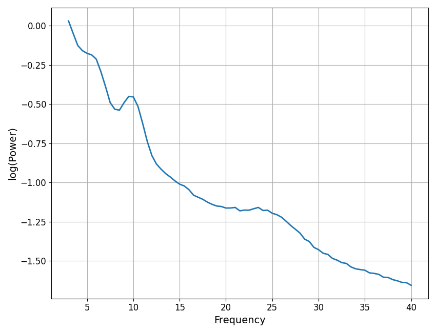

Note
Click here to download the full example code
Plot Power Spectra¶
Visualizing power spectra.
# Import matplotlib, which will be used to manage some plots
import matplotlib.pyplot as plt
# Import FOOOF plotting functions
from fooof.plts.spectra import plot_spectrum, plot_spectra
from fooof.plts.spectra import plot_spectrum_shading, plot_spectra_shading
# Import simulation utilities for creating test data
from fooof.sim.gen import gen_power_spectrum, gen_group_power_spectra
from fooof.sim.params import param_iter, Stepper
Plotting Power Spectra¶
FOOOF offers a plotting sub-module that includes a several plotting options for visualizing power spectra.
These plot functions overlap with what is accessible directly through the FOOOF objects,
as the plot() method. There are extra functions in the module, and extra functionality
available in the plotting module.
Note that the plots in FOOOF are all built using matplotlib. They all allow for passing in extra matplotlib parameters for tuning the plot aesthetics, and can also be customized using matplotlib code and approaches.
In this example, we will simulated power spectra to explore the available plotting options. First, we’ll create two spectra, using an example with different aperiodic components with the same oscillations, including theta, alpha & beta peaks.
Plotting Individual Power Spectra¶
First we will start with the core plotting function that plots an individual power spectrum.
The plot_spectrum() function takes in a frequency vector and a single vector
of power values, and plots the corresponding power spectrum.
This function, as all the functions in the plotting module, takes in optional parameters log_freqs and log_powers that control whether the frequency and power axes are plotted in log space.
Plotting Multiple Power Spectra¶
The plot_spectra() function takes in one or more frequency vectors and one or more
sets of power values and plots multiple power spectra. Note that the inputs for either can be
either 2d arrays, or lists of 1d arrays. You can also pass in additional optional parameters
including labels, to specify labels to use in a plot legend, and colors to specify
which colors to plot each spectrum in.
Plots With Shaded Regions¶
In some cases it may be useful to highlight or shade in particular frequency regions, for example, when examining power in particular frequency regions.
The plot_spectrum_shading() function takes in a power spectrum and one or more shade
regions, and plot the power spectrum with the indicated region shaded.
The same can be done for multiple power spectra with plot_spectra_shading().
These functions take in an input designating one or more shade regions, each specified as [freq_low, freq_high] of the region to shade. They also take in an optional argument of shade_colors which can be used to control the color(s) of the shade regions.
Put it all together¶
Finally, we can put all these plotting tool together.
To do so, note also that all plot functions also take in an optional ax argument that can specify an axes to plot on. This can be used to place plots in multi-axes figures, and/or to add to existing plots.
Here we will also take advantage of being able to pass in parameters for the underlying matplotlib plot call to tune the aesthetics of our plot.
As a final example then, we will simulate different alpha center frequencies (in faded colors) as compared to a ‘canonical’ 10 Hz centered alpha, altogether on a plot with a shaded in alpha region.
# General settings for the simulations
freq_range = [3, 30]
ap_params = [1, 1]
# Simulate a single 10 Hz centered alpha
freqs_al10, powers_al10 = gen_power_spectrum(freq_range, ap_params,
[10, 0.25, 1], nlv=0)
# Simulate spectra stepping across alpha center frequency
cf_steps = Stepper(8, 12.5, 0.5)
freqs_al, powers_al = gen_group_power_spectra(len(cf_steps), freq_range, ap_params,
param_iter([cf_steps, 0.25, 1]))
# Create the plot, plotting onto the same axes object
fig, ax = plt.subplots(figsize=[12, 8])
plot_spectra_shading(freqs_al, powers_al, [8, 12],
log_powers=True, alpha=0.6, ax=ax)
plot_spectrum(freqs_al10, powers_al10, log_powers=True,
color='black', linewidth=3, label='10 Hz Alpha', ax=ax)
plt.title('Comparing Alphas', {'fontsize' : 20, 'fontweight' : 'bold'});
Out:
Text(0.5, 1.0, 'Comparing Alphas')
Total running time of the script: ( 0 minutes 0.476 seconds)